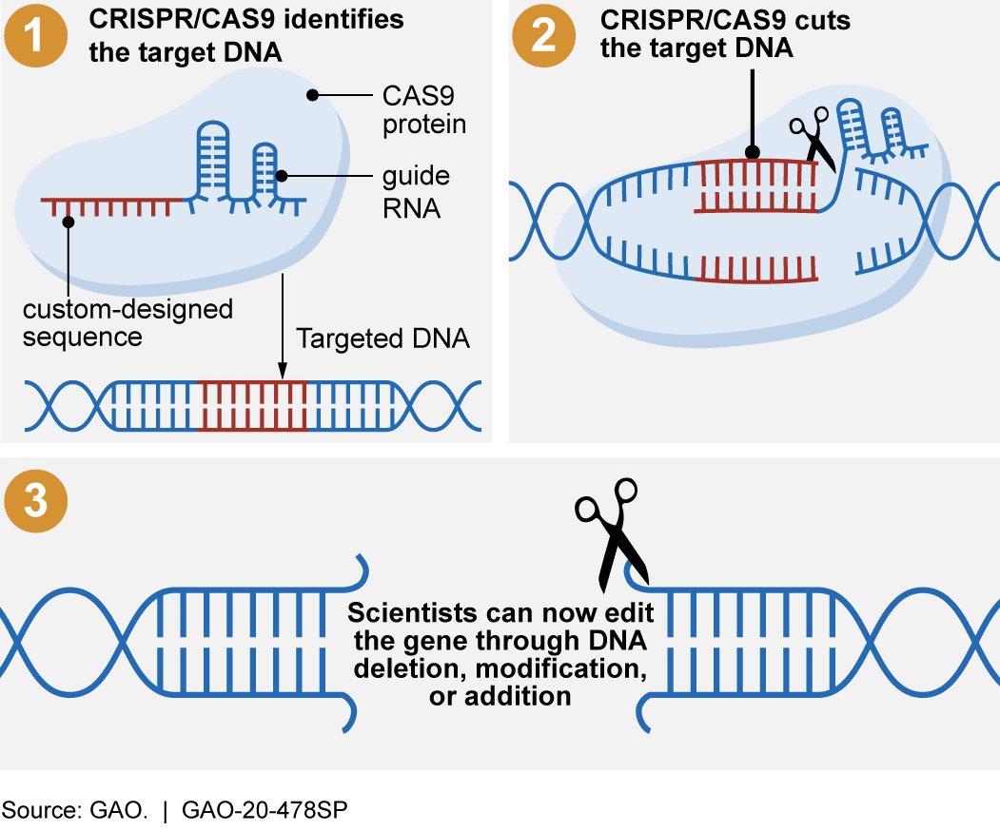
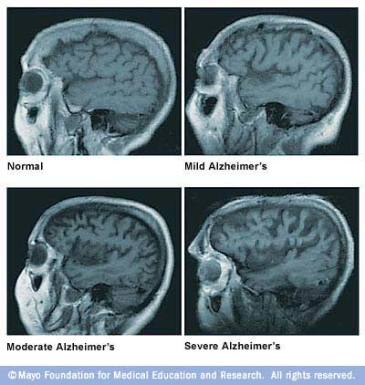
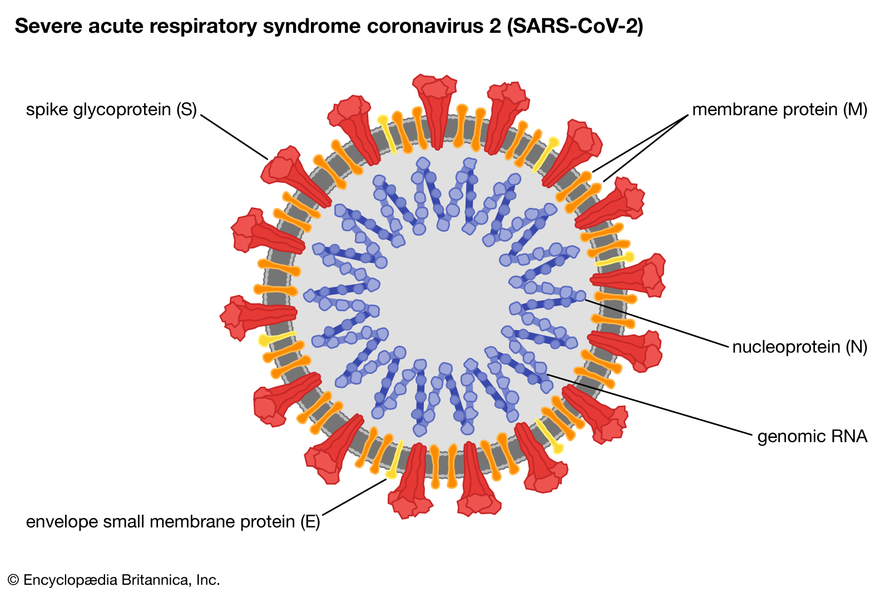

By Kevin Bai - Sept 12, 2020
In certain prokaryotic organisms, special DNA sequences called the CRISPR-Cas system act as a basic immune system to defend against infection. The first major property of this system, CRISPR, is a DNA array that stores known bacteriophage DNA. CRISPR stands for clustered regularly interspaced short palindromic repeats, which describe the repetitive nucleotide sequences and alternating Bacteriophage DNA fragments (spacers) that make up the system. Secondly, Cas genes produce enzymes that access and store simpler versions of these spacers known as crRNA. The proteins then actively seek and destroy pathogenic DNA that contains matching DNA bases. Francis Mojica and his team is most frequently attributed to the discovery and naming of CRISPR in 1987.
Since 1987, research regarding the CRISPR-Cas system has now innovated the process of gene editing. With a reliable method to accurately cut unwanted DNA away and microinject desirable genes, scientists are on the verge of creating miracles. Genetic diseases could be forgotten as mutated genes are simply cut away and replaced with artificial DNA. However, these solutions also introduce a plethora of ethical issues.
If you’ve ever read/watched Aldous Huxley’s Brave New World Andrew Niccol’s Gattaca, you may be familiar with some gene editing’s ethical issues, especially when the targets are germline cells. Editing egg or sperm cells allows traits to be passed through generations, unlike editing somatic cells which leave reproductive cells unchanged. Introducing desirable traits into newer generations will guarantee descrimination and a bias against the ‘unedited.’ Currently, embryo genome editing is illegal in a multitude of countries, but it is difficult to say when these nations will take back their words in pursuit of power or a competitive edge.
References:
GAO Science and Tech Spotlight
MedlinePlus: Genome Editing
By Kevin Bai - Sept 17, 2020
Dementia is a classification of neurological symptoms such as memory loss, psychosis, and anxiety that occur together, often the result of an underlying condition. The diseases most commonly associated with dementia - Alzheimer’s, Huntington’s, and Parkinson’s - kill hundreds of thousands per year. Discovered a century ago, why haven’t we found a cure for these fatal conditions?
For this report, we will be primarily focusing on Alzheimer’s disease, the most fatal of the previously listed. First observed in 1906 by Alois Alzhiemer, he described it as a “peculiar severe disease process of the cerebral cortex. Current Alzheimer’s Disease research associates disease emergence with genetic, environmental, and age factors, but no specific causes have been found. The disease is characterized by the overproduction and tangling of Amyloid-Beta and Tau proteins, which block nutrient and nerve impulse flow to neurons, which quickly leads to cell death. MRIs of severe Alzheimer’s patients show a significant loss of brain matter.
There are many possible reasons neurodegenerative diseases such as Alzheimer’s have no cure. Even though there are millions of medical professionals and hundreds of nonprofit organizations dedicated to the research of Alzheimer’s, that research has only gained traction in the last couple decades. The simplest reason is that we just don’t know what causes it. The brain is an exceptionally complex organ, and identifying a genetic/environmental cause is difficult with the level of technology that is currently available. Although we can detect neurofibrillary tangles through PET scans, their existence is a symptom, not a cause. Another explanation for the lack of research throughout the 1900s is disease pathogenesis. With most Alzheimer’s patients experiencing symptoms in their late 60s, it is possible that life expectancy at the time was not developed enough to observe late stage symptoms. In conclusion, the lack of information regarding Alzheimer’s origins and insignificance during its discovery led to a period of research stagnation.
References:
Azheimer's Association
Huntington's Outreach Project For Education, At Stanford
CDC QuickStats
Mayo Clinic: Brain Atrophy and Alzheimer's
Our World in Data: Life Expectancy
National Institute on Aging
By Kevin Bai - Sept 28th, 2020

The Covid-19 Pandemic is arguably the defining event of 2020. With over 1 million deaths worldwide of the total 35 million cases, the disease has put tremendous strain on countries’ health care systems. Amidst the chaos, numerous pharmaceutical companies have attempted to create a vaccine, but none have produced considerable results. This raises the question of why the Coronavirus - and other viral infections - are so hard to cure.
Covid-19 is classified as a coronavirus, a family of RNA viruses with distinct crown-like spikes on their surface (not named after the beer company). These spikes are glycoproteins that allow the virus to bind and infect host lung cells, which is why coronaviruses are mainly respiratory diseases. Your lung cells have a plethora of different receptor proteins outside their cell membrane, allowing vital molecules to enter. Coronaviruses exploit this function in order to sneak inside the cell, where they subsequently disintegrate and release their viral RNA. In fact, this RNA strand is the main reason viral infections are so hard to cure.
RNA replication is much more susceptible to mutation than regular DNA because of its comparatively unstable structure. However, the frequent breaking of RNA is actually a benefit to viruses, as every mutation changes their molecular structure enough to render antibodies and vaccines useless. Trying to keep up with these viral mutations is extremely difficult because of mutation speed and randomness, but scientists are making progress.
There are a plethora of trial vaccines being produced to combat Covid-19. The 2 most promising vaccines being developed are mRNA and rVSV vaccines. mRNA vaccines introduce a synthetic mRNA into your body in order to stimulate antibody production, which will produce antibodies to combat Covid-19 without the risk of being infected. The latter uses a modified vesicular stomatitis virus to deliver genuine Covid-19 RNA into cells (this method has proven useful in combating diseases such as Ebola).
However, each of these options have drawbacks. mRNA vaccines tend to require multiple doses to achieve a significant immune response, whereas rVSV vaccines may lead to an actual infection. No matter whichever vaccine is finalized first, we must remember that the vaccine will not make Covid-19 disappear. For the considerable future, we all need to follow state safety guidelines in order to protect those more vulnerable.
Resources:
By Kevin Bai - Oct 16th, 2020
Parkinson’s Disease, a form of dementia, is a neurological disorder characterized by stiffness, tremors, and difficulty walking/balancing. As the disease progresses, symptoms expand to include memory and talking difficulties, and patients will often experience these symptoms until death. Genetics has been identified as a cause of Parkinson’s, but other unknown environmental factors account for a majority of cases.
Research has identified an absence of cells within the substantia nigra of the brain which leads to malfunctions in dopamine synthesizing neurons, a major variable in the manifestation and progression of Parkinson’s. While the direct chemical relationship between lack of dopamine and Parkinson’s symptoms are not well understood, experimentation and studies show that Parkinson’s patients experience cell death in the limbic regions of the brain which lead to motor impairment.
Although much of Parkinson’s disease remains unknown, we have developed medication that stabilize neurotransmitter concentration, mitigating the effect of Parkinson’s symptoms. Dopamine agonists (such as Mirapex or Requip) are a common prescription medication that have allowed Parkinson’s patients to live a relatively normal life.
Dopamine agonists are artificial molecules that are structurally similar to dopamine, which allow them to activate the same receptors on nerve cells. The basal ganglia, an area of the brain that regulates movement, uses these agonists to reduce the influence of inhibitory neurotransmitters that make movements slow and laggy.
While the number of fatalities of Parkinson’s is less than other diseases such as Alzheimer’s, its importance to medical research is important nonetheless. Understanding dopamine and other neurotransmitters such as norepinephrine and serotonin will allow psychologists and neurologists to solve similarly dire problems such as addiction.
By Kevin Bai - Nov 10th, 2020
Multiple Sclerosis (MS) was first defined and documented in 1868 by French neurologist Jean-Martin Charcot. Charcot was able to skillfully differentiate MS from Parkinson’s disease, another neurological disorder, using three key symptoms: intention tremors (slow, rhythmic, uncontrollable shaking), nystagmus (uncontrollable eye movement), and scanning speech (aka staccato speech). Although contemporary research shows that these symptoms are not unique to MS, Charcot’s research laid the groundwork for more sophisticated studies into the neuropathogenesis of MS and its symptoms.
MS is a persistent disease that affects the myelin sheath of nerve cells. MS is caused by a variety of sources, from genetics, infectious diseases, and autoimmune disorders. While the exact pathogenesis of MS is unclear, lab testing shows that each factor contributes to cell death. In autoimmune forms of MS, the disease often attacks the body in phases, tricking the body’s immune system to attack cells within the central nervous system. While the body demonstrates some form of healing, scar tissue quickly begins to build up (shown as white regions on MRI scans), causing irreversible damage. In genetic MS, the disease causes a breakdown of myelin, a fatty gel-like substance that coats the axon of nerves. The myelin acts as an insulator, similar to the rubber coating of a wire, ensuring that electrical signals are not lost or interfered with. In patients with MS, functions of the brain such as movement and vision become impaired. These attacks typically occur in heavily myelinated regions of the brain, such as the brainstem and white matter areas (e.g the inner section of the brain).
Like many neurological disorders, MS has no absolute cure. However, its long history of observation and research have provided scientists time to gather crucial information about disease progression. Currently, anti-inflammatory medication is effective at slowing down MS, while cures such as Simvastatin (a type of neuroprotective medication that prevents further damage to nerve cells) are in phase 3 trials.
By Kevin Bai - Dec 31st, 2020